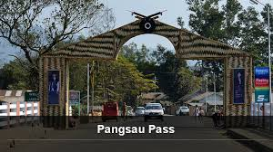

Pangsau pass

Pangsau Pass or Pan Saung Pass, 3,727 feet (1,136 m) in altitude, lies on the crest of the Patkai Hills on the India-Burma (Myanmar) border. The pass offers one of the easiest routes into Burma from the Assam plains. It is named after the closest Burmese village, Pangsau, that lies 2 km beyond the pass to the east.

HOW TO REACH ?
Nearest Airport: Etanagar
Nearest Railway Station:Etanagar
Nearest Bus Stand:Etanagar